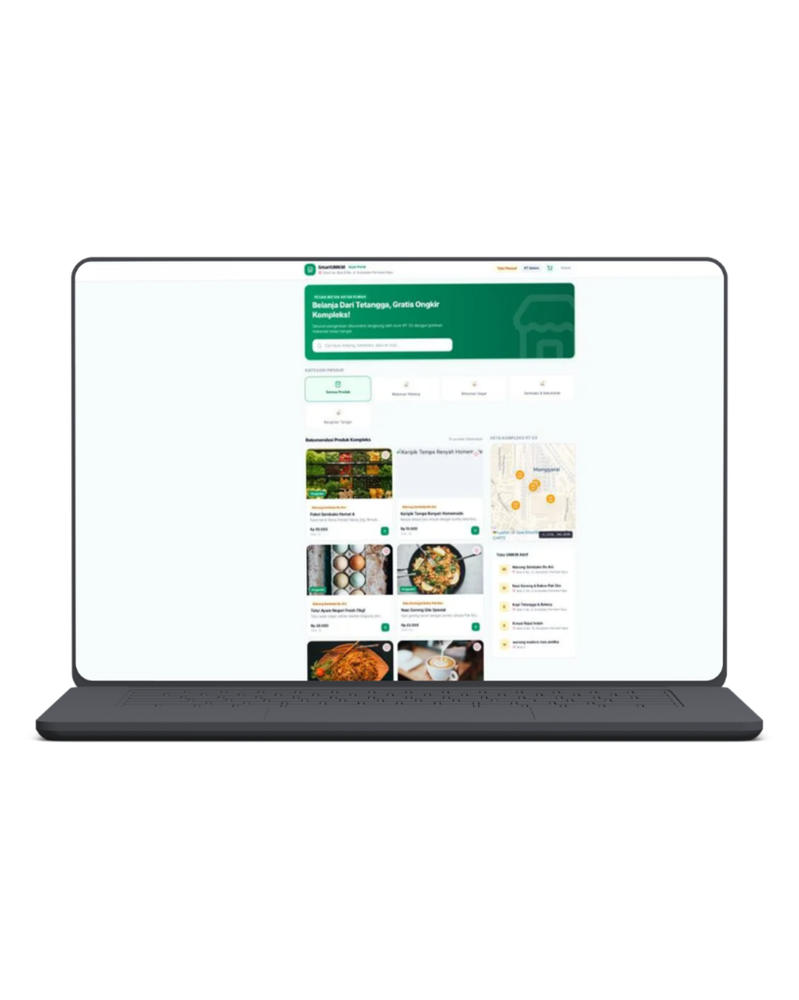
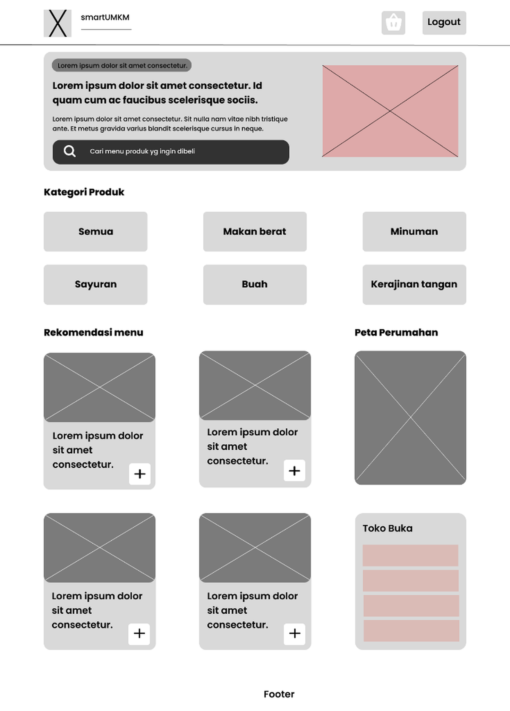

SmartUMKM
A simple digital marketplace for neighborhood communities

Bringing neighborhood businesses into one digital space.
SmartUMKM adalah konsep marketplace digital yang dirancang khusus untuk lingkungan perumahan.
Project ini berangkat dari kebiasaan warga yang menggunakan grup WhatsApp sebagai tempat untuk menawarkan dan mencari produk. Meskipun praktis, informasi produk dapat dengan cepat tertumpuk oleh percakapan lain sehingga sulit ditemukan kembali.
SmartUMKM mencoba menghadirkan pengalaman yang lebih terstruktur, mudah dicari, dan nyaman digunakan melalui sebuah marketplace berbasis web.
Tantangan Utama
"When everything is sold through chat, finding products becomes difficult."
Grup WhatsApp dapat menjadi tempat yang praktis untuk berjualan, tetapi memiliki beberapa keterbatasan ketika jumlah informasi semakin banyak. Pengguna dapat mengalami kesulitan untuk:
- remove Menemukan produk yang pernah ditawarkan
- remove Mengetahui produk apa saja yang sedang tersedia
- remove Membedakan produk yang masih dijual dan sudah terjual
- remove Mencari penjual atau produk tertentu
- remove Melihat informasi produk secara terstruktur
Akibatnya, informasi jual-beli mudah tertimbun oleh percakapan lainnya.
How might we make buying and selling within a neighborhood community simpler and more organized?
Tujuan Perancangan
SmartUMKM dirancang untuk menciptakan pengalaman jual-beli yang lebih terstruktur tanpa membuat prosesnya menjadi rumit.
Simple
Warga dapat melihat produk tanpa harus mencari melalui chat percakapan.
Organized
Produk ditampilkan dalam katalog terstruktur yang rapi dan konsisten.
Discoverable
Pengguna dapat mencari produk yang mereka butuhkan dengan cepat dan mudah.
Community-focused
Platform dibuat khusus untuk konteks perumahan, bukan marketplace besar yang rumit.
Dua Tipe Pengguna Utama
Resident / Buyer
Warga PembeliWarga yang ingin mencari dan membeli produk dari penjual di lingkungan sekitar.
- check Melihat produk yang tersedia
- check Mencari produk spesifik
- check Melihat detail informasi produk
- check Mengetahui status ketersediaan produk
- check Menemukan kontak penjual
Seller
Warga Penjual (UMKM)Warga yang ingin menawarkan produk makanan/jasa kepada warga lainnya.
- check Menambahkan produk baru
- check Menampilkan informasi produk secara lengkap
- check Mengubah status penjualan (Tersedia/Habis)
- check Mengelola daftar produk yang ditawarkan
From WhatsApp groups to Catalog-based Experience
Masalah utamanya bukan karena warga tidak memiliki tempat untuk berjualan, tetapi karena informasi produk tidak memiliki ruang khusus untuk dikelola dan ditemukan kembali.
From Conversation-based ➔ Catalog-based
Daripada produk bercampur dengan percakapan chat sehari-hari, setiap produk kini memiliki ruang khusus dan informasi terstruktur tersendiri.
Arsitektur Informasi
Struktur SmartUMKM dibuat sederhana agar pengguna dapat memahami platform dengan cepat.
Alur Pengguna (Buyer & Seller Flow)
Struktur Low-Fidelity Wireframe
Fokus tahap ini adalah struktur dan usability, bukan dekorasi visual semata.

Visual Direction & Components
Skop Fitur MVP Prioritas
- • Product Catalog
- • Product Listing
- • Sale Status
- • Resident & Seller Login
- • Search
- • Operational Hours
- • Upload Notification
- • Category Filter
- • Online Payment
- • Recommendations
- • Location Features
Fitur korporat yang terlalu kompleks ditunda agar fokus pada kebutuhan utama warga.
From scattered conversations to an organized marketplace.
Final design SmartUMKM mengubah pengalaman jual-beli yang sebelumnya tersebar di dalam percakapan chat menjadi pengalaman katalog yang terstruktur dan mudah digunakan.
Start small. Solve the real problem first.
"Designing for a community, not just a screen."
My Role in SmartUMKM
Fokus pekerjaan mencakup: menentukan struktur halaman, merancang user flow, menyusun information architecture, membuat wireframe, mendesain interface & product catalog, mendesain seller experience, dan mengembangkan interface website dengan HTML, CSS, JavaScript.
Project Outcome
SmartUMKM menghasilkan konsep marketplace digital yang berfokus pada kebutuhan dasar jual-beli dalam lingkungan perumahan. Dibuat dengan prinsip: Simple enough to use. Structured enough to scale.